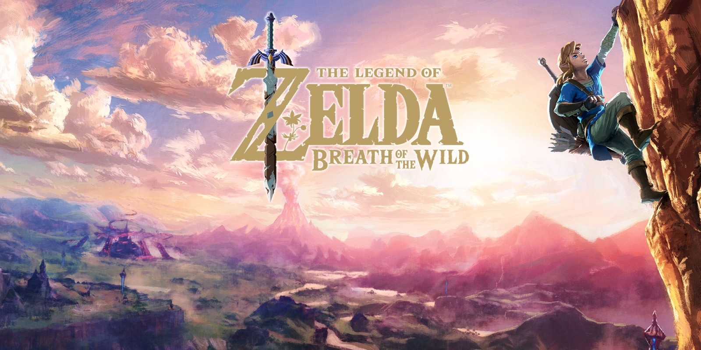
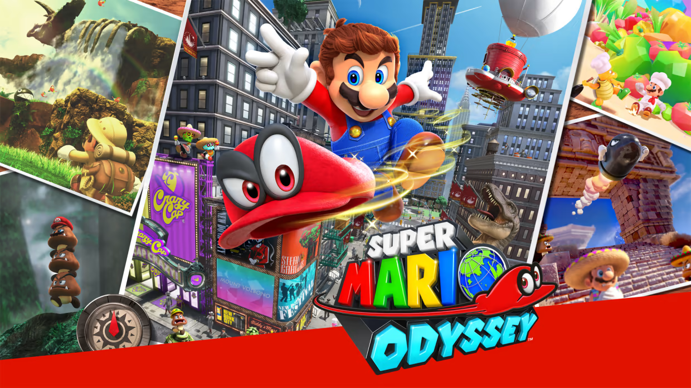
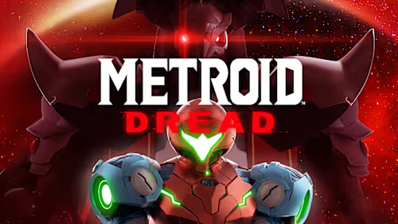
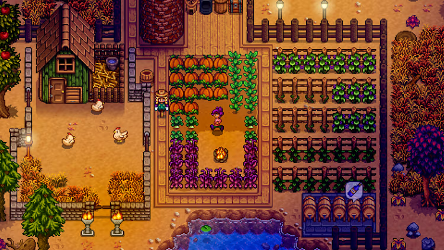

Nintendo
A Nintendo é uma empresa japonesa multinacional de entretenimento que começou por fabricar cartas de baralho e se tornou uma líder mundial em videogames e consoles, com um histórico de sucesso desde o lançamento do Nintendo Entertainment System nos anos 80. Atualmente, a empresa desenvolve a família de consoles Nintendo Switch e jogos icónicos como Mario, The Legend of Zelda e Pokémon, como objetivo de criar experiências únicas que tragam sorrisos para pessoas em todo o mundo.
Top 10 Jogos do Nintendo Switch
-

- The Legend of Zelda: Breath of the Wild
- Super Mario Odyssey
- The Legend of Zelda: Tears of the Kingdom
- Super Smash Bros. Ultimate
- Super Mario Kart 8 Deluxe
- Animal Crossing: New Horizons
- Metroid Dread
- Pokémon Legends Arceus
- Hades
- Stardew Valley
Um divisor de águas no design de mundo aberto — liberdade total, exploração intuitiva e emergente. É amplamente celebrado como um dos melhores de todos os tempos.
Plataforma 3D criativa e vibrante onde o chapéu Cappy permite quase qualquer interação. Um dos jogos mais bem avaliados da história.

Expansão criativa e polida de Breath of the Wild, adicionando verticalidade (céu e subterrâneo). Um passo evolutivo ousado e aclamado.

O crossover definitivo: elenco gigantesco, combate refinado e conteúdo infinito. Campeão de vendas e multiplayer.

Corrida arcade icônica com física afiada, visual bonito e o battle mode melhorado — o kart rey do Switch.

Simulação relax: botar a vida na ilha com estilo, personalização e comunidade. Vibrante, terapêutico e sucesso cativante global.
Retorno triunfante da série Metroid 2D após décadas; ação precisa, atmosfera tensa e mecânicas fluídas.

Inovador RPG da franquia — mundo semi-aberto, captura em tempo real e narrativa diferenciada. Mudou o formato clássico.

Roguelite afiado e emocional, com combate envolvente e narrativa dinâmica. Reconhecido pela crítica e pela profundidade.
Farming sim viciante: colheita, NPCs, mineração, pesca — egolatria rural que cativa tanto em sessões rápidas quanto longas.